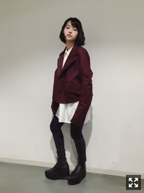
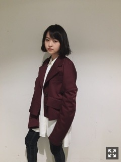
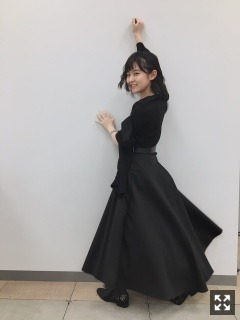

幕張メッセ個別握手会
ありがとうございました。

MIKIO SAKABEのジャケット
久しぶりにはいたBOPPER！重い！

今度発売されるムック本にも
ちょっと出るのでお楽しみに。
べーん
生誕Tシャツ着ました∠( 'ω')／
デビューから今までの印象的なこと
15歳から現在までの横顔！
ナイフ
まりっか'17
生まれたままで
すべての犬は天国へ行く
墓場、女子高生
現在
って感じ。
ほとんどの方着てくれてて嬉しかった！

レーンが華やかだった〜
生誕祭、たくさんのお祝いの言葉
ありがとうございました！
入場曲がMEWTONで湧いた〜〜
素敵な装飾やメッセージやお花感謝です。
こんなに見てくれてるんだな、
すごいな、と毎度思います。
みんな親のように、
受け止めるぜ！って言ってくれるもん。
優しい。
前回のコメントも読みました〜
こんなに反響くると思ってなかったので
びっくりしてます。
まだ解禁してないのもあるので、
ぜひ楽しみにしててください。

髪型変わって制作はじまってからずっと
服も何もかもすべてが似合わない現象が
起きててかなり落ち込んでましたが
この日やっと落ち着いたかなあ、、
まりか